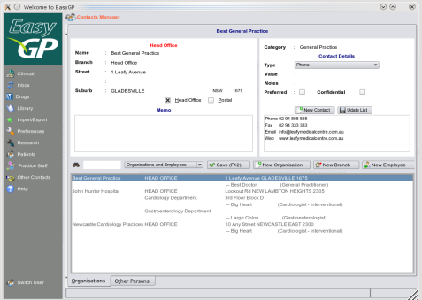
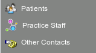

Contacts Manager
Note: Your icon set will be determined by your linux window manager settings, so icons used in these illustrations will
almost certainly differ from the ones you see on the screen.

This is probably
the most important module in the whole of the program and it is absolutely essential that you take the time
to read and understand its functioning in detail before building and running your program.
The contacts database is central to the functioning of EasyGP.
It contains
- Patient information and demographic details
- Organisations, their branches and their employees which includes your staff
- All persons not in the above two categories
To aid in keeping information in a logical manner, it is functionally split up into three sections within
the graphics user interface accessable via the
the side bar:

Whereas EasyGP will function adequately if you edit the data any-old-how, to get the most out
of the program it is vital to structure your contacts data logically.